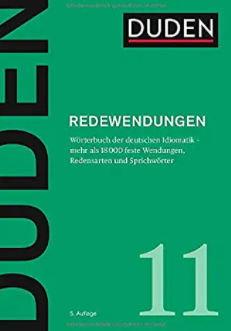
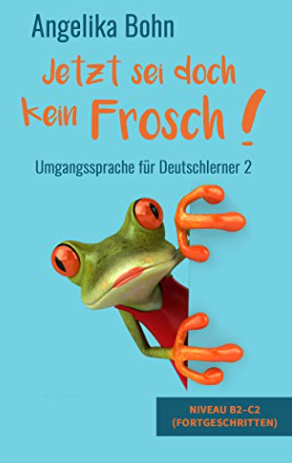

"Ich denk' an was, was du nicht meinst..."
Literatur:
Idioms: Description, Comprehension,
Acquisition, and Pedagogy
(ESL & Applied Linguistics Professional Series),
Dilin Liu (2008)
Metaphors We Live By,
George Lakoff - Mark Johnson

Duden 11 - Redewendungen: Wörterbuch der deutschen Idiomatik
– 12. Oktober 2020,
Dudenredaktion
Il ruolo della memoria nell'apprendimento delle lingue:
Una prospettiva glottodidattica
– 1. Januar 2010,
Mario Cardona
Deutsch für Inländer:
Von Schwall-Deutsch über
Krass-Deutsch
bis zu SIMS-Deutsch und Wellness-Deutsch:
die 15 neuen Deutschs
Armin Reins, Veronika Claßen

Jetzt sei doch kein Frosch!
- Umgangssprache für Deutschlerner 2
- Niveau B2-C2 (Fortgeschritten)
Angelika Bohn
Bock auf echtes Deutsch?
- Umgangssprache für Deutschlerner
- Niveau B2-C2 (Fortgeschritten)
Angelika Bohn
Phönix aus der Asche:
Redensarten, die Europa verbinden Copertina
– 13. September 2021
Rolf-Bernhard Essig (Autor), Till Laßmann (Illustrator)
The Emoji Revolution:
How Technology is Shaping the Future of Communication
Philip Seargeant
The Semiotics of Emoji:
The Rise of Visual Language in the Age of the Internet
(Bloomsbury Advances in Semiotics)
Marcel Danesi
The Handbook of Technology and
Second Language Teaching and Learning
(Blackwell Handbooks in Linguistics)
Germanistische Linguistik:
Eine Einführung
– 13. August 2018
Articles:
Learning Styles and Memory
Memonics efficiency in language practice
Eficacia de los mnemónicos en la práctica del lenguaje.
Gedächtnistechniken für Deutsch als Fremdsprache
The Influence of Colour on Memory Performance: A Review
The Impact of Colors on Learning
Memory for moving and static images